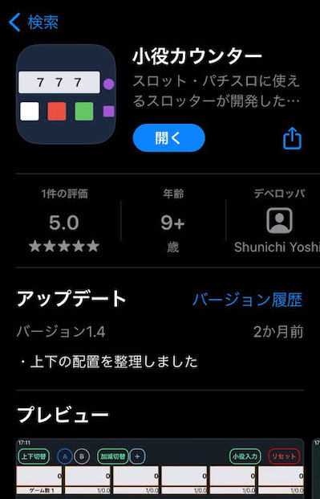

- 小役カウンター -
小役カウンター

スロットに使える小役カウンターです。
エンタメ的なアプリではなく、計算機として機能するという明確な目標を持って開発するのはパズルを解いているみたいで楽しかった。
小役の回数を手入力できたり画面の下に連続で押された回数が表示されたりと、こだわりのポイントもいくつかあるので、スロッターのみなさんは是非使ってみてください。
スロットに使える小役カウンターです。
エンタメ的なアプリではなく、計算機として機能するという明確な目標を持って開発するのはパズルを解いているみたいで楽しかった。
小役の回数を手入力できたり画面の下に連続で押された回数が表示されたりと、こだわりのポイントもいくつかあるので、スロッターのみなさんは是非使ってみてください。